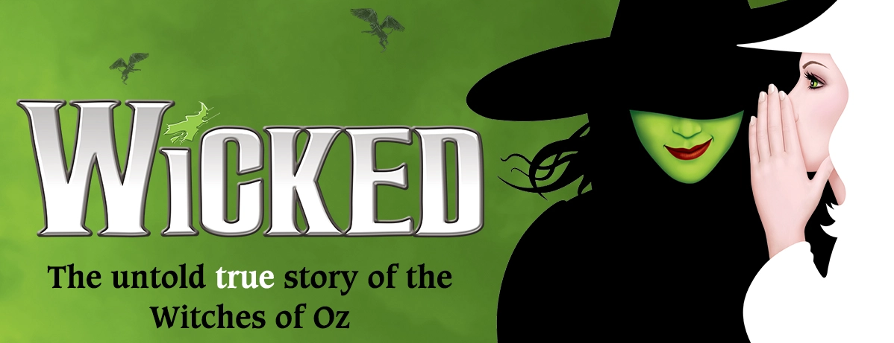
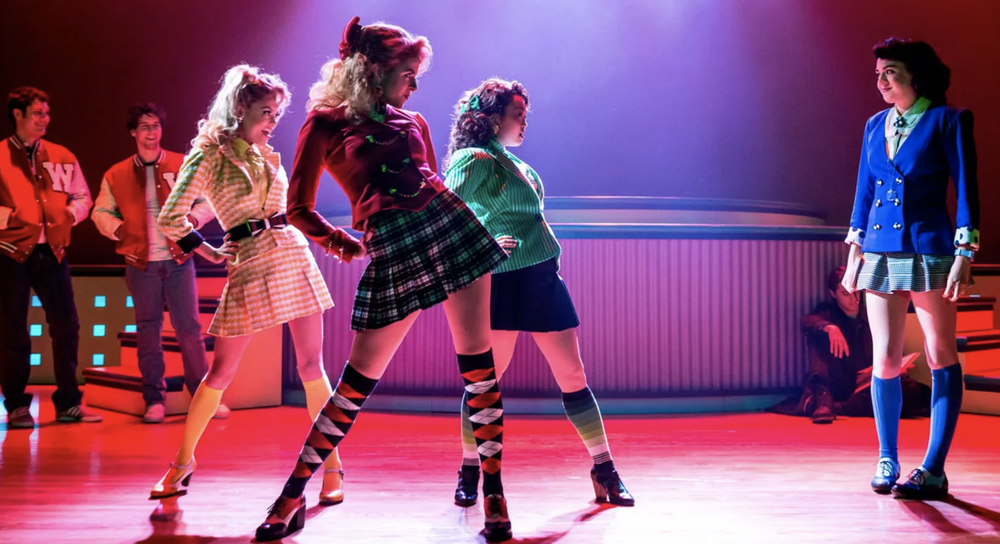
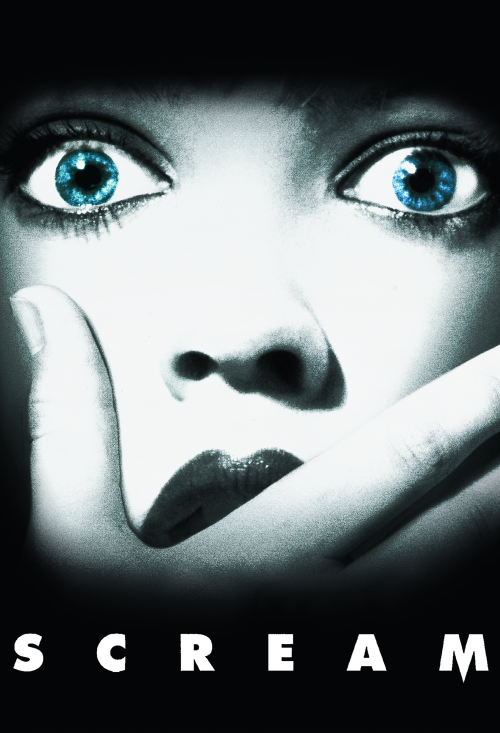

Wicked is my top favorite because it tells a story of The Wizard of Oz from the villain's point of view through fantastic music,
and incredible setpieces while also tell a story about a complex relationship between two female leads.

Heathers the Musical is also my top favorite because the songs are ear catchty great,
the costume design look amazing and it captures the spirit of the original film.
The Spongebob Musical is my top favorite Musical I picked due to how it manages to adapt a cartoon into Broadway.
And how it manages to captures the hearts of millions without feeling like a cheap cashgrab.
I picked Frozen the musical as my top 5 favorite Broadway Musical because of how it fixed plot holes that hurts the overall story,
and how it manages to captures the spirit and heart of the original film even with the changes.
Overall, I chose these Top Five Favorite Broadway because of how they change the stories to either make it relatable with audiences,
fix plot holes that made some stories felt weak, or provide people with catchty and amazing songs that captures the hearts of many.
Top Five Franchises I want to see being adapted into a Broadway Musical
Kpop Demon Hunters is my top favorite I want to be see being adapted into a Broadway Musical because of its soundtrack and story that can work in a Broadway Stage.
And how it could become the second Kpop Broadway musical in history.
I picked Scott Pilgrim as my one of the top 5 favorite franchise I want to see being adapted into Broadway because the movie was already like a rock musical only with action set pieces instead of singing,
And with the franchise being theme around music, it has the potential to become a musical with the right budget.
I chosen Nightmare before Christmas for one of my top 5 favorite franchises because I was surprised Disney haven't adapted into a musical yet.
Especially since the film has some untapped potential about musical set pieces.
I picked Barbie for my top 5 favorite Franchise that need to be adapted to Broadway because it could potentially mexplore the themes of gender roles and identity in a way that resonate with audiences.

I chose The Scream movie has my top 5 favorite I want to see adapted into a musical
because of how much comedy potential it has with translating a horror film into the Broadway Stage.
Overall, I picked these five franchises as my top favorite wanting to be adapted to broadway because of how much potential they have,
from music being part of what made it so memorable, to stories that can resonate with audiences in a different way.